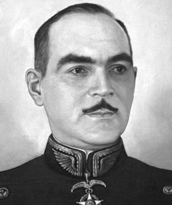

Brigadeiro Lysias Augusto Rodrigues (1896–1957) nasceu no Rio de Janeiro e formou-se aspirante em Artilharia em 1918. Pioneiro da aviação militar brasileira, integrou a primeira turma de Observadores Aéreos e tornou-se piloto em 1927. Defensor da criação do Ministério do Ar no Brasil, publicou artigos e liderou campanhas para unificar e fortalecer a aviação civil e militar no país.
Participou da implantação do Correio Aéreo Militar, realizando viagens de reconhecimento e abrindo rotas aéreas pelo interior brasileiro, incluindo a região do Tocantins. Durante a Revolução Constitucionalista de 1932, comandou o Grupo de Aviação Constitucionalista, sendo posteriormente exilado e anistiado em 1934. Autor de obras sobre aviação e explorador aéreo, apresentou a Getúlio Vargas anteprojeto para a criação do Estado do Tocantins. Em sua homenagem, o aeroporto de Palmas leva seu nome. Lysias Rodrigues faleceu em 1957, deixando legado de patriotismo, pioneirismo e visão estratégica para a aviação e o desenvolvimento nacional.
